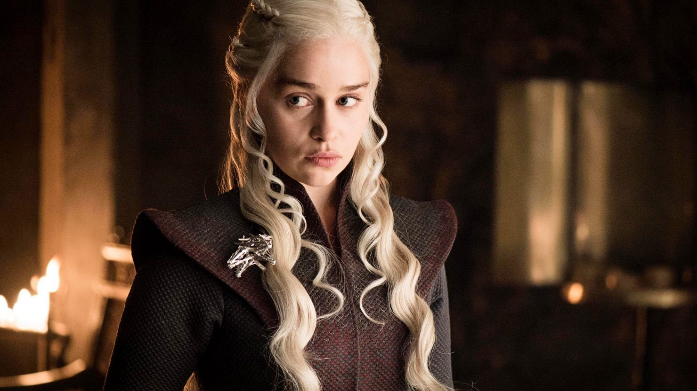

О сериале
«Игра престолов» — американский сериал, снятый по мотивам серии романов «Песнь льда и пламени». Он рассказывает о борьбе за Вестерос в вымышленном мире, полном политических интриг и эпических сражений».
Ключевые персонажи
Джон Сноу — неузнаваемый сын Эддарда Старка, воспитанный как его незаконнорожденный сын в Винтерфелле. Он присоединяется к Ночному Дозору, где впоследствии становится 998-м лорд-командующим. Джон известен своим чувством чести и справедливости, а также исключительными навыками в бою. Его происхождение и судьба играют ключевую роль в борьбе за Железный трон и противостоянии с Белыми Ходоками.
Дейенерис Таргариен — последняя выжившая представительница дома Таргариенов, изгнанного с Железного трона революцией Роберта Баратеона. Изначально кажущаяся незначительной и слабой, она растет в силу и влияние, становясь могущественной правительницей с армией и драконами. Ее цель — вернуть Железный трон, который, по ее мнению, по праву принадлежит ее семье.
Тирион Ланнистер, известный также как Гном, — третий ребенок Тайвина Ланнистера, лорда Кастерли-Рока. Он презирается отцом и сестрой за свой рост и обвиняется в смерти своей матери, умершей при его рождении. Несмотря на физические ограничения, Тирион обладает острым умом и хитростью. Он часто использует свой интеллект, чтобы маневрировать в политически опасных водах Вестероса.
Великие дома Вестероса
Дом Старков — один из старейших и самых знатных домов Вестероса, владеющий Винтерфеллом. Старки являются вардами Севера и долгое время защищали королевство от угроз с севера. Девиз дома: "Зима близко". Символом является волк. Старки известны своей честностью, честью и строгим соблюдением традиций. После многих испытаний и потерь в сериале, дом Старков вновь восстанавливает свое положение на Севере.

Дом Ланнистеров — один из самых богатых и могущественных домов Вестероса. Их девиз: "Слышь мой рёв". Символ — лев. Ланнистеры владеют Кастерли-Роком, горной крепостью, расположенной над огромными золотыми рудниками. Они известны своей богатством, влиянием и безжалостностью к врагам. Тайвин Ланнистер, глава семейства, стремится укрепить положение своего дома и власть над Семью Королевствами.
Дом Таргариенов был основан Валерийскими завоевателями и является единственным выжившим домом после падения Валерии. Долгое время Таргариены правили Семью Королевствами, пока их не свергли в ходе восстания Роберта Баратеона. Их девиз: "Огонь и кровь". Символ — трехголовый дракон. Таргариены известны своей связью с драконами, которых они использовали для завоевания и управления королевством. После падения династии оставшиеся Таргариены стремятся восстановить свое правление над Вестеросом.